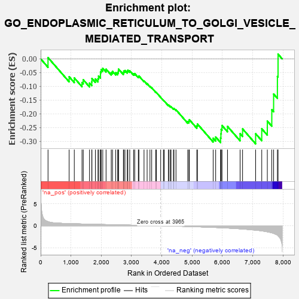
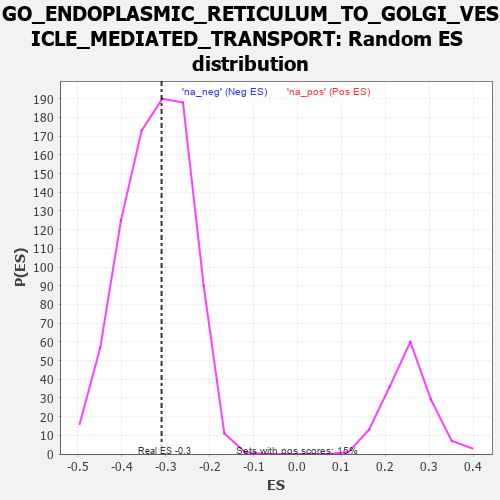

| | | Dataset | 7d |
| Phenotype | NoPhenotypeAvailable |
| Upregulated in class | na_neg |
| GeneSet | GO_ENDOPLASMIC_RETICULUM_TO_GOLGI_VESICLE_MEDIATED_TRANSPORT |
| Enrichment Score (ES) | -0.30939308 |
| Normalized Enrichment Score (NES) | -0.9609007 |
| Nominal p-value | 0.55111635 |
| FDR q-value | 0.9027739 |
| FWER p-Value | 1.0 |
Table: GSEA Results Summary

Fig 1: Enrichment plot: GO_ENDOPLASMIC_RETICULUM_TO_GOLGI_VESICLE_MEDIATED_TRANSPORT
Profile of the Running ES Score & Positions of GeneSet Members on the Rank Ordered List
| PROBE | GENE SYMBOL | GENE_TITLE | RANK IN GENE LIST | RANK METRIC SCORE | RUNNING ES | CORE ENRICHMENT | | 1 | NSF | | | 243 | 0.947 | 0.0044 | No |
| 2 | STX17 | | | 940 | 0.497 | -0.0652 | No |
| 3 | RINT1 | | | 1110 | 0.462 | -0.0695 | No |
| 4 | COG6 | | | 1365 | 0.416 | -0.0862 | No |
| 5 | YIPF5 | | | 1406 | 0.409 | -0.0761 | No |
| 6 | COPZ1 | | | 1613 | 0.372 | -0.0883 | No |
| 7 | COPB2 | | | 1687 | 0.359 | -0.0843 | No |
| 8 | HYOU1 | | | 1692 | 0.358 | -0.0715 | No |
| 9 | COPA | | | 1806 | 0.336 | -0.0733 | No |
| 10 | CUL3 | | | 1893 | 0.321 | -0.0723 | No |
| 11 | COG2 | | | 1911 | 0.319 | -0.0626 | No |
| 12 | ZW10 | | | 1973 | 0.309 | -0.0588 | No |
| 13 | MCFD2 | | | 1975 | 0.309 | -0.0475 | No |
| 14 | DCTN6 | | | 1999 | 0.305 | -0.0391 | No |
| 15 | GOSR2 | | | 2050 | 0.298 | -0.0344 | No |
| 16 | CNIH1 | | | 2159 | 0.283 | -0.0375 | No |
| 17 | SEC13 | | | 2330 | 0.256 | -0.0495 | No |
| 18 | COG7 | | | 2371 | 0.250 | -0.0453 | No |
| 19 | TMED7 | | | 2478 | 0.230 | -0.0502 | No |
| 20 | COPE | | | 2542 | 0.221 | -0.0500 | No |
| 21 | COG8 | | | 2564 | 0.218 | -0.0446 | No |
| 22 | YKT6 | | | 2571 | 0.217 | -0.0373 | No |
| 23 | DCTN3 | | | 2731 | 0.193 | -0.0502 | No |
| 24 | LMAN1 | | | 2743 | 0.192 | -0.0445 | No |
| 25 | SCFD1 | | | 2783 | 0.185 | -0.0426 | No |
| 26 | COPG2 | | | 2859 | 0.173 | -0.0456 | No |
| 27 | TMED5 | | | 2877 | 0.170 | -0.0415 | No |
| 28 | GOSR1 | | | 2940 | 0.159 | -0.0434 | No |
| 29 | PROS1 | | | 3070 | 0.141 | -0.0545 | No |
| 30 | TMED4 | | | 3106 | 0.136 | -0.0539 | No |
| 31 | BET1L | | | 3224 | 0.118 | -0.0643 | No |
| 32 | TFG | | | 3243 | 0.114 | -0.0624 | No |
| 33 | COG3 | | | 3412 | 0.088 | -0.0803 | No |
| 34 | YIF1B | | | 3514 | 0.075 | -0.0903 | No |
| 35 | COG4 | | | 3608 | 0.058 | -0.0999 | No |
| 36 | DCTN5 | | | 3665 | 0.049 | -0.1052 | No |
| 37 | SPAST | | | 3801 | 0.027 | -0.1213 | No |
| 38 | BET1 | | | 3817 | 0.025 | -0.1223 | No |
| 39 | STX18 | | | 3962 | 0.000 | -0.1405 | No |
| 40 | DCTN4 | | | 4052 | -0.016 | -0.1512 | No |
| 41 | COG1 | | | 4079 | -0.020 | -0.1537 | No |
| 42 | GBF1 | | | 4215 | -0.044 | -0.1691 | No |
| 43 | VTI1A | | | 4224 | -0.046 | -0.1685 | No |
| 44 | NRBP2 | | | 4274 | -0.055 | -0.1726 | No |
| 45 | SAR1A | | | 4304 | -0.060 | -0.1741 | No |
| 46 | ARF4 | | | 4383 | -0.073 | -0.1812 | No |
| 47 | STX5 | | | 4400 | -0.077 | -0.1804 | No |
| 48 | LRRK2 | | | 4467 | -0.087 | -0.1855 | No |
| 49 | USO1 | | | 4855 | -0.168 | -0.2282 | No |
| 50 | COG5 | | | 4895 | -0.176 | -0.2266 | No |
| 51 | CAPZB | | | 4908 | -0.179 | -0.2215 | No |
| 52 | LMAN2 | | | 5155 | -0.238 | -0.2438 | No |
| 53 | DCTN2 | | | 5175 | -0.243 | -0.2372 | No |
| 54 | MPPE1 | | | 5694 | -0.372 | -0.2889 | Yes |
| 55 | VAMP7 | | | 5777 | -0.399 | -0.2845 | Yes |
| 56 | VAPA | | | 5939 | -0.449 | -0.2882 | Yes |
| 57 | DCTN1 | | | 5950 | -0.454 | -0.2726 | Yes |
| 58 | PGAP1 | | | 5958 | -0.457 | -0.2566 | Yes |
| 59 | SCAP | | | 5986 | -0.466 | -0.2427 | Yes |
| 60 | GOPC | | | 6167 | -0.528 | -0.2459 | Yes |
| 61 | ARF1 | | | 6583 | -0.701 | -0.2724 | Yes |
| 62 | TMED2 | | | 6665 | -0.746 | -0.2550 | Yes |
| 63 | RAB1A | | | 7096 | -0.993 | -0.2726 | Yes |
| 64 | ANK2 | | | 7298 | -1.170 | -0.2546 | Yes |
| 65 | VAPB | | | 7482 | -1.378 | -0.2266 | Yes |
| 66 | PDCD6 | | | 7630 | -1.615 | -0.1853 | Yes |
| 67 | ANK3 | | | 7690 | -1.740 | -0.1282 | Yes |
| 68 | ANK1 | | | 7815 | -2.146 | -0.0643 | Yes |
| 69 | GRIA1 | | | 7836 | -2.260 | 0.0171 | Yes |
Table: GSEA details [plain text format]

Fig 2: GO_ENDOPLASMIC_RETICULUM_TO_GOLGI_VESICLE_MEDIATED_TRANSPORT: Random ES distribution
Gene set null distribution of ES for GO_ENDOPLASMIC_RETICULUM_TO_GOLGI_VESICLE_MEDIATED_TRANSPORT